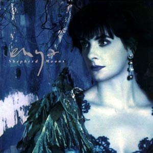

Shepherd Moons (1991)
Enya's timeless masterpiece, Shepherd Moons, made a resounding impact upon its release in November 1991, securing the coveted Grammy Award for "Best New Age Album" in 1993. This celebrated album exists in multiple versions, each offering its own unique allure. The initial 1991 release showcased a Gaelic language-only rendition of the captivating track "Book of Days". However, Enya's musical journey took an intriguing turn when an English and Gaelic adaptation of the same song found its way into the evocative soundtrack of the film Far And Away. Subsequent pressings of the album featured a re-recording of this dual-language rendition, replacing the original Gaelic-only version.
There are at least two versions of Shepherd Moons. The first release of 1991 featured a gaelinc language only version of . An English and Gaelic version of this song was subsequently used in the soundtrack of the movie. A re-recording of the latter replaced the original on later pressings of the album.
The accolades bestowed upon "Shepherd Moons" reflect its profound impact on the music industry and its enduring legacy. Enya's enchanting compositions and ethereal vocals transported listeners to a realm of pure musical bliss, resulting in critical acclaim and commercial success. The Grammy Award for "Best New Age Album" in 1993 served as a testament to the album's remarkable artistry and its ability to captivate audiences with its unparalleled beauty.
A remix of "Ebudæ" was used in the Toys film. "Marble Halls" appears in the soundtrack of the film The Age of Innocence.
Singles: "Caribbean Blue" (1991), "How Can I Keep from Singing?" (1991), "Book of Days" (1992), "Marble Halls" (1994).
Jump to lyrics, videos list, linear notes, awards, charts and credits.
Lyrics list
- Shepherd Moons (Instrumental)
- Caribbean Blue
- How Can I Keep From Singing?
- Ebudæ
- Angeles
- No Holly For Miss Quinn (Instrumental)
- Book Of Days
- Evacuee
- Lothlórien (Instrumental)
- Marble Halls
- Afer Ventus
- Smaointe...
Videos
Lyrics
Caribbean Blue lyrics
Roma Ryan... Eurus...
... Afer Ventus...
... so the world goes round and round
with all you ever knew
They say the sky high above
is Caribbean blue...
... if every man says all he can,
if every man is true,
do I believe the sky above
is Caribbean blue...
... Boreas...
... Zephryus...
... if all you told was turned to gold,
if all you dreamed was new,
imagine sky high above
in Caribbean blue...
... Eurus...
Afer Ventus...
... Boreas
Zephryus...
... Africus...
How Can I Keep From Singing? lyrics
TraditionalMy life goes on in endless song
above earth's lamentations,
I hear the real, though far-off hymn
that hails a new creation.
Through all the tumult and the strife
I hear its music ringing,
It sounds an echo in my soul.
How can I keep from singing?
While though the tempest loudly roars,
I hear the truth, it liveth.
And though the darkness 'round me close,
songs in the night it giveth.
No storm can shake my inmost calm,
while to that rock I'm clinging.
Since love is lord of heaven and earth
how can I keep from singing?
When tyrants tremble in their fear
and hear their death knell ringing,
when friends rejoice both far and near
how can I keep from singing?
In prison cell and dungeon vile
our thoughts to them are winging,
when friends by shame are undefiled
how can I keep from singing?
Ebudæ lyrics
Used in Toys film soundtrackRoma Ryan
Amharc, mná ag obair lá 's mall san oích,
Ceolann siad ar laetha geal, a bhí,
Bealach fada anonn 's anall a chóich.
Translation
Look, women working by day and late at night,
They sing of bright days that were,
A long way back and forth forever.
Angeles lyrics
Roma RyanAngels, answer me,
are you near if rain should fall?
Am I to believe
you will rise to calm the storm?
For so great a treasure words will never do.
Surely, if this is,
promises are mine to give you.
mine to give...
Here, all too soon the day!
Wish the moon to fall and alter tomorrow.
I should know
heaven has her way
- each one given memories to own.
Angeles, all could be
should you move both earth and sea
Angeles, I could feel
all those dark clouds disappearing...
Even, as I breathe
comes an angel to their keep.
Surely, if this is
promises are mine to give you.
mine to give...
Book Of Days lyrics
Ó lá go lá, mo thuras,
An bealach fada romham.
Ó oíche go hoíche, mo thuras,
na scéalta nach mbeidh a choích.
Translation
From day to day, my journey.
The long road before me.
From night to night, my journey.
The stories that will be lost forever.
Evacuee lyrics
Roma RyanEach time on my leaving home
I run back to my mother's arms,
one last hold and then it's over.
Watching me, you know I cry,
you wave a kiss to say goodbye,
Feel the sky fall down upon me!
All I am, a child with promises
All I have, are miles full of promises of home.
If only I could stay with you,
my train moves on, you're gone from view,
Now I must wait until it's over.
Days will pass, your words to me,
it seems so long; eternity,
but I must wait until it's over.
Marble Halls lyrics
Alfred BunnI dreamt I dwelt in marble halls
with vassals and serfs at my side,
and of all who assembled within those walls
that I was the hope and the pride.
I had riches all too great to count
and a high ancestral name.
But I also dreamt which pleased me most
that you loved me still the same,
that you loved me
you loved me still the same,
that you loved me
you loved me still the same.
I dreamt that suitors sought my hand,
that knights upon bended knee
and with vows no maidens heart could withstand,
they pledged their faith to me.
And I dreamt that one of that noble host
came forth my hand to claim.
But I also dreamt which charmed me most
that you loved me still the same
that you loved me
you loved me still the same,
that you loved me
you loved me still the same.
Afer Ventus lyrics
Roma RyanMare Nubium. Umbriel.
Mare Imbrium. Ariel.
Et itur ad astra.
Et itur ad astra.
Mare Undarum. Io. Vela.
Mirabile dictu. Mirabilia.
Mirabile visu. Mirabilia.
Et itur ad astra.
Et itur ad astra.
Sempervirent. Rosetum.
Afer Ventus. Zephyrus.
Volturnus. Africus.
Et itur ad astra.
Et itur ad astra.
Etesiarum. Eurus.
Running verse:
Suus cuique mos. Suum cuique.
Meus mihi, suus cuique carus.
Mememto, terrigena.
Mememto, vita brevis.
Meus mihi, suus cuique carus.
Translation
(The Moon and the stars)
Mare Nubium. Umbriel.
Mare Imbrium. Ariel.
And so, one goes to the stars.
And so, one goes to the stars.
Mare Undarum. Io. Vela.
(The Earth)
Wonderful to speak of. Wonderful things.
Wonderful to see. Wonderful things.
And so, one goes to the stars.
And so, one goes to the stars.
Evergreens. A garden of roses.
(The winds)
Afer Ventus.. Zephyrus.
Volturnus. Africus.
And so, one goes to the stars.
And so, one goes to the stars.
Etesiarum. Eurus.
(The earthborn)
Each man to his own. Let this be so.
That which is mine I treasure,
and everyone treasures their own.
Remember, earthborn,
remember, life is short.
And that which is mine is treasured by me,
as everyone treasures their own.
Smaointe... lyrics
Roma RyanÉist le mo chroí,
Go brónach a choích
Tá mé caillte gan tú
's do bhean chéile.
An grá mór i do shaoil
Threoraí sí mé.
Bígí liomsa i gcónái
Lá 's oích.
Ag caoineadh ar an uaigneas mór
Na deora, go brónach
Na gcodladh ins an uaigh ghlas chiúin
Faoi shuaimhneas, go domhain
Aoibhneas a bhí
Ach d'imigh sin
Sé lean tú
Do fhear chéile.
An grá mór i do shaoil
Threoraí sé mé.
Bígí liomsa i gcónái
Lá 's oích.
Ag caoineadh ar an uaigneas mór
Na deora, go brónach
'Na gcodladh ins an uaigh ghlas chiúin
Faoi shuaimhneas, go domhain
Smaointe, ar an lá
Raibh sibh ar mo thaobh
Ag inse scéil
Ar an dóigh a bhí
Is cuimhin liom an lá
Gan gha 's gan ghruaim
Bígí liomsa i gcónaí
Lá 's oích'.
Translation
A Thought…
Listen to my heart.
so sad forever;
I am lost without you
and your wife,
the great love in your life.
She guided me.
Both of you, be with me always,
day and night.
I cry at the great loneliness
tears, so sad,
and you sleeping in the quiet, green grave
in deep peace.
There was happiness,
but it went away.
You followed your husband,
the great love in your life.
He guided me.
Both of you, be with me always,
day and night.
I cry at the great loneliness
tears, so sad,
and you sleeping in the quiet, green grave
in deep peace.
I think of the day
that you were at my side
telling stories
of the days that were.
I remember the day,
without want and without gloom.
Both of you, be with me always,
day and night.
Linear notes
Shepherd Moons
Two tiny new moons had been discovered. Shepherd Moons orbiting a ring of Saturn. Numbered, not named. Working ceaselessly, it seemed, to keep the particles of the ring together, much as a shepherd would guide his flock. Protectors both, 1980S26 and 1980S27 - either side of the F rings. Voyager had performed like a dream and sent their pictures to Earth. I marvelled at their diligence, a new mystery, poignant and beautiful. An unspoken glory to the rings of Saturn. The world had not known but all the time they were there, working tirelessly. Everyone had appreciated the spectacular beauty of Saturn, but where would the planet be without those precious, mis-shapen, miniature moons?
Caribbean Blue
It is much easier to imagine a beautiful place on a rainy day than to imagine a dreary one. It is a simple fact, often forgotten, that people may create something good merely by thinking it so. A day-dream is as rich a gift as any. Like Afer Ventus, the wind from Africa, or Eurus, the East wind, Boreas from the North or the gentle Zephyrus, the imagination is free and can choose and create its own journey. As with all dreams we reach for the ideal, and 'Caribbean Blue' represents such a dream.
How Can I Keep from Singing?
This is based on an old Shaker hymn which I suggested as a suitable addition to the album, not only because of the beautiful melody, but the lyrical content seems as relevant today as it did 250 years ago when the hymn was written.
It is unfortunate that the Shakers are known to the world at large mainly for their ability to build and design beautiful furniture. The Shakers also wrote beautiful music and songs with which they glorified their joy in living. They lived very simple lives and their melodies reflect the beauty inherent in this simplicity.
It is not widely known that in 1846 the Shakers sent food to Ireland in an attempt to relieve the suffering during the famine, and this also held significance in our decision to arrange the piece.
Ebudae
I had come across Ebudae in Ariosto's classic tale of Orlando Furioso, the island thought to be intended as one of the Hebrides, referred to as the Dreadful Isle or the Isle Of Tears. I had fallen in love with the name, and when sometime later I was browsing through an old book of ancient maps, I was delighted to find Ebud&ae actually recorded and in this original form! The title of the song 'Ebudae' and the lyrics concern themselves with ancient sounds.
There are two 'voices' which work their way through the piece. The first voice concerns itself with the story - which is loosely based on the tradition of women weaving and chanting to the rhythm of their work. The second voice is a mixture of sounds and fragments of sounds half-invented, half-remembered from childhood. As is often the case, what one actually hears and what one thinks one hears can be two very different things. With this rhythmic section we try to capture those impressions.
Angeles
At times we ask for extraordinary things to happen in our lives and somehow, deep down, we believe that they will. Someone, somewhere, may have the power to help us - a Guardian Angel perhaps, some spiritual minder, a protector from life's darker moments.
Such a belief can be a comfort in life, an easy relationship with a world beyond our own. A gentle hand on your shoulder to guide you through, though not away from, the harder times.
No Holly For Miss Quinn
A partner piece to 'Miss Clare Remembers' (Watermark). 'No Holly For Miss Quinn' was prompted by another Miss Read story. The idyllic descriptions of country and village life and the simple portraits of those who peopled such settings had appeal to Enya. In composing this music she recaptures the naivety and innocence of an age and place far removed from the whirl and pressure of our sophisticated society and suggests that we need to dip into that world from time to time.
Book Of Days
I am collecting diaries more and more and I continue to be intrigued by the possibilities of each blank page - what will it hold? I experience a mixture of sadness and exuberance when I think of lives laid out on a page or in a book. Personal histories of great loves, of journeys exotic and wonderful, of loss, fear and tragedy, of dreams and simple wishes.
Evacuee
I remember her face. She told of how she had been an evacuee during the Second World War. As she told her story she began to cry like the girl she had been half a century ago. The pain of her separation from her parents registered with immediacy on her face. As a child she could not understand why she had to leave them, and the effect of this had stayed with her. The only hope she had as a child was a promise that they would all be together again.
Lothl�rien
Sam felt as if he were inside a song when he described Lothl�rien, the land of enchantment and wonder in J.R.R. Tolkien's Lord Of The Rings. Lothl�rien is as beautiful as a dream, as pure as the dawn of creation and as old as the beginning of time. Here, the leaves of the Mallorn trees in Autumn do not fall, but turn to gold.
Various translations and suggested origins of the name Lothl�rien give us colourful and imaginative expressions such as 'the vale of the land of singers', 'the valley of the singing Gold' and 'Dreamflower'.
Marble Halls
An operatic piece originally scored by the Irish composer and baritone, Michael William Balfe (1808-1870). 'Marble Halls', or 'The Dream' as it is also known, is from his 1843 opera The Bohemian Girl, which enjoyed great success during his lifetime. Balfe was once complimented by Strauss as being the Master of Melody. The Bohemian Girl, and in particular this song, is a favourite of both Enya and her mother.
Afer Ventus
The moment experienced when everything in life suddenly makes sense - when everything fits into place and we know why - is a rare moment, but it does happen. If we are lucky enough we can bathe in the brevity of that moment for it passes as quickly as it arrives. Like Joyce's 'Epiphanies' they can sometimes seem trivial, but are always crucial and revealing moments in our lives, delicate and fleeting.
In 'Afer Ventus' it is those moments of pure enlightenment which are described.
Smaointe... (D'Aodh Agus Do Mh�ire U� Dh�gain)
The story of the beach at Maragallen (The Plain of the Shelter) is that many years past, a great wave swept onto the land, crashing down upon the small church and graveyard, destroying the church. All who were in the church that day, perished.
It is in this same graveyard that Enya's grandparents are buried. Enya often talked to me of how she could see the graveyard as she walked along the shores of the Maragallen, and of how she felt her grandparents were watching over her and guiding her still. Memories of her childhood and days spent with them come to Enya when she walks there, memories which she will treasure always. I wrote 'Smaointe' in response to these reflections. The word 'smaointe' literally translated means 'thoughts'.
Awards
Grammy Awards| Year | Winner | Category |
|---|---|---|
| 1993 | Shepherd Moons | Best New Age Album |
Charts
Album| Country | Peak position | Certification | Saless |
|---|---|---|---|
| Australia | 3x Platinum | 210,000 | |
| Austria | 31 | ||
| Brazil | Platinum | 250,000+ | |
| Canada | 3x Platinum | 300,000+ | |
| France | Gold | ||
| Germany | Gold< | ||
| Netherlands | 2x Platinum | 160,000+ | |
| New Zealand | 39 | ||
| Norway | 2 | ||
| Spain | 2 | 4xPlatinum | |
| Sweden | 5 | ||
| Switzerland | 13 | Gold | 25,000+ |
| United Kingdom | 1 | 4x Platinum | 1,200,000+ |
| United States | 17 | 5x Platinum | 5,600,000+(238weeks) |
| Year | Single | Chart | Position |
|---|---|---|---|
| 1991 | "Caribbean Blue" | Modern Rock Tracks (US) | 3 |
| 1992 | "Caribbean Blue" | Adult Contemporary (US) | 29 |
| 1992 | "Caribbean Blue" | The Billboard Hot 100 (US) | 79 |
| 1991 | "Caribbean Blue" | Official Singles Chart (UK) | 13 |
| 1991 | "How Can I Keep From Singing?" | Official Singles Chart (UK) | 32 |
| 1992 | "Book Of Days" | Official Singles Chart (UK) | 10 |
Credits
Guest musicians:- Angeles: clarinet by Roy Jewitt
- Book of Days: percussion by Andy Duncan
- Evacuee: cornet by Steve Sidwell
- Smaointe... : uillean pipes by Liam O'Flionn
Produced by Nicky Ryan
Music composed and performed by Enya
Lyrics by Roma Ryan
Arranged by Enya & Nicky Ryan
Tracks 3 and 10
Arranged by Enya & Nicky Ryan
Executive producer: Rob Dickins
Recording engineer: Nicky Ryan
Mixing engineer: Greg Jackman
Recorded at Aigle Studios
Mixed at Sarm West
Tracks 3, 7 and 9
Recording engineer: Greg Jackman
Recorded and mixed at Sarm West
Assistant Engineer: Robin Barclay
Track 4 Recorded and mixed by Nicky Ryan
All instruments and voices by Enya
Published by EMI Songs Ltd
Photography by David Scheinmann
Wardrobe by The New Renaissance
"Our thanks to: Owen Drumm of Owen Drumm Designs, Ideal Systems, John Kennedy, Se�n Cannon M-Ocean Pictures, Peter Reichardt & all at the Warner family.
�r mbu�ochas do Rob Dickins a d'fhan, 'ag an sti�ir'. (Our thanks to Rob Dickins who stayed at the helm.)